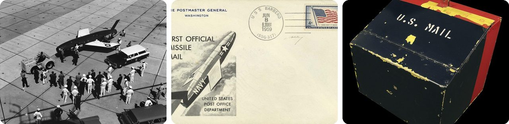
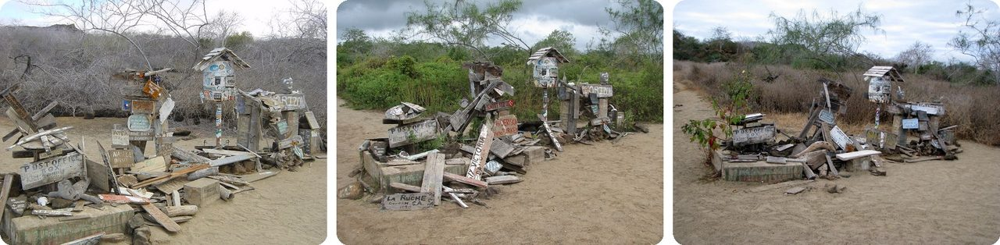
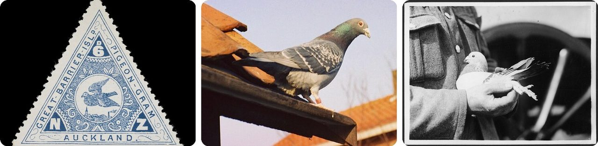

🌍 Top 10 Boîtes aux lettres et services postaux bizarres
16 novembre 2026
1. 🇳🇴 La Norvège a un bureau de poste au fond de la mer
 À Risør, une petite ville de la côte sud de la Norvège, le club de plongée local a ouvert un bureau de poste à 4 mètres sous l'eau le 4 juin 2004. C'est à peu près la profondeur du grand bain d'une grande piscine.
À Risør, une petite ville de la côte sud de la Norvège, le club de plongée local a ouvert un bureau de poste à 4 mètres sous l'eau le 4 juin 2004. C'est à peu près la profondeur du grand bain d'une grande piscine.
C'est une cloche de plongée en fibre de verre remplie d'air, donc l'intérieur reste sec. Un poids de 5 tonnes, à peu près aussi lourd qu'un éléphant, la tient au fond de la mer.
Voici comment une carte postale y arrive. Tu la mets dans une boîte sur la jetée → quelques fois par semaine, le receveur plongeur descend le courrier dans un sac étanche → il est tamponné dans la bulle d'air → puis il remonte et repart avec le courrier normal.
C'est une boîte aux lettres qu'il faut vider avec des palmes.
2. 🇫🇷 Paris a envoyé des lettres par des tubes à air sous les rues pendant 118 ans
 De 1866 à 1984, Paris avait une poste pneumatique : les messages voyageaient dans de petites cartouches poussées par l'air dans des tubes en métal. Les tubes passaient dans les égouts de la ville, donc pas besoin de creuser de nouvelles tranchées, et le courrier évitait les embouteillages au-dessus.
De 1866 à 1984, Paris avait une poste pneumatique : les messages voyageaient dans de petites cartouches poussées par l'air dans des tubes en métal. Les tubes passaient dans les égouts de la ville, donc pas besoin de creuser de nouvelles tranchées, et le courrier évitait les embouteillages au-dessus.
Tu écrivais un petit mot sur un formulaire « petit bleu ». La pression de l'air l'envoyait jusqu'au bureau le plus proche de ton ami → un coursier le portait en courant jusqu'à sa porte. Les cartouches filaient à environ 24 km/h, aussi vite qu'un cycliste.
À son maximum, en 1934, le réseau comptait 427 km de tubes, à peu près la distance de Paris à Londres. En 1945, il a transporté 30 millions de messages.
Vois ça comme un SMS, sauf que le message est un bout de papier et qu'Internet, c'est l'égout.
3. 🇺🇸 La poste américaine a un jour livré du courrier avec un missile de croisière

Le 8 juin 1959, le sous-marin USS Barbero a tiré un missile de croisière Regulus vers une base aérienne de la Marine à Mayport, en Floride. Sa tête nucléaire avait été remplacée par deux conteneurs de courrier contenant environ 3 000 lettres.Vingt-deux minutes plus tard, le missile a atterri sans problème. Le courrier a ensuite été envoyé au bureau de poste de Jacksonville et distribué normalement.
Le ministre des Postes américain a dit qu'avant que l'homme n'aille sur la Lune, des missiles porteraient le courrier de New York à la Californie, à la Grande-Bretagne, à l'Inde ou à l'Australie en quelques heures. Ce « courrier par missile » n'a été envoyé qu'une seule fois.
C'est comme envoyer une carte postale avec un feu d'artifice, et ça n'a marché qu'une fois.
4. 🇪🇨 Aux Galápagos, un tonneau en bois sert de bureau de poste depuis 200 ans

Autrefois, les baleiniers s'arrêtaient sur l'île Floreana, aux Galápagos, pour prendre de l'eau et de la nourriture. Depuis le XIXe siècle, les marins gardaient un tonneau en bois à un endroit qu'on appelle aujourd'hui Post Office Bay.Un équipage qui partait y déposait ses lettres. Un navire qui rentrait fouillait le tonneau, prenait les lettres qui allaient dans sa direction et les emportait, surtout vers l'Europe et les États-Unis.
Les visiteurs le font encore aujourd'hui, sans aucun timbre. Tu laisses une carte postale, puis tu cherches dans le tas une carte adressée près de chez toi et tu la livres toi-même.
Autrement dit, le facteur, c'est le prochain qui passe.
5. 🇺🇸 Dans le Grand Canyon, des mules portent encore le courrier
 Supai, où vit la tribu havasupai, se trouve tout au fond du Grand Canyon, en Arizona. Le village est à 8 miles (13 km) de la route la plus proche et n'a pas de voitures, alors c'est le seul endroit des États-Unis où les mules portent encore le courrier.
Supai, où vit la tribu havasupai, se trouve tout au fond du Grand Canyon, en Arizona. Le village est à 8 miles (13 km) de la route la plus proche et n'a pas de voitures, alors c'est le seul endroit des États-Unis où les mules portent encore le courrier.
Un chauffeur conduit le courrier pendant une heure jusqu'au début du sentier. Ensuite, on le charge sur des mules, qui portent chacune jusqu'à 200 livres (90 kg), à peu près le poids d'un adulte, pour descendre le canyon.
La plupart de ce courrier, c'est de la nourriture. Les produits frais attendent dans une chambre froide au bureau de poste de Peach Springs, le seul du pays à en avoir une.
En gros, le camion de livraison a quatre pattes et de longues oreilles.
6. 🇹🇴 Une île des Tonga recevait son courrier dans des boîtes en fer jetées des bateaux
 Niuafoʻou est une île volcanique des Tonga sans port profond, donc les grands navires ne pouvaient pas s'y arrêter. Dès 1912, les habitants ont inventé le « courrier en boîte de conserve » : les bateaux qui passaient enfermaient le courrier dans des boîtes à biscuits ou à kérosène et les jetaient par-dessus bord.
Niuafoʻou est une île volcanique des Tonga sans port profond, donc les grands navires ne pouvaient pas s'y arrêter. Dès 1912, les habitants ont inventé le « courrier en boîte de conserve » : les bateaux qui passaient enfermaient le courrier dans des boîtes à biscuits ou à kérosène et les jetaient par-dessus bord.
Des nageurs allaient les chercher. Ils s'accrochaient à une perche flottante appelée fau, et un seul aller-retour pouvait durer plusieurs heures.
En 1931, un requin a tué l'un des nageurs, alors la nage a été interdite et on a pris des pirogues à la place. Les collectionneurs de timbres adoraient tellement ces enveloppes au tampon spécial que l'île est devenue célèbre sous le nom de « Tin Can Island » (l'île de la boîte de conserve).
C'est de la livraison à domicile, si ton domicile était au milieu de l'océan.
7. 🇺🇸 En 1914, des parents ont envoyé leur fille de 5 ans par la poste chez sa grand-mère
 En 1913, la poste américaine a commencé à livrer des colis. Le 19 février 1914, les parents de Charlotte May Pierstorff, 5 ans, à Grangeville dans l'Idaho, l'ont envoyée comme ça chez sa grand-mère à Lewiston, parce que c'était moins cher qu'un billet de train.
En 1913, la poste américaine a commencé à livrer des colis. Le 19 février 1914, les parents de Charlotte May Pierstorff, 5 ans, à Grangeville dans l'Idaho, l'ont envoyée comme ça chez sa grand-mère à Lewiston, parce que c'était moins cher qu'un billet de train.
May pesait 48,5 livres (22 kg). Elle a voyagé dans le wagon postal avec 32 cents de timbres collés sur son manteau, environ 10 dollars d'aujourd'hui.
Un employé de la poste ferroviaire, le cousin de sa mère, l'a surveillée tout le long et l'a déposée chez sa grand-mère. Son voyage a poussé la poste à interdire l'envoi de personnes.
C'était un colis qui savait parler.
8. 🇦🇶 Le bureau de poste de l'Antarctique est entouré de manchots
 Port Lockroy, sur une toute petite île au large de la péninsule Antarctique, a le bureau de poste en service le plus au sud du monde. On l'appelle le « bureau de poste des manchots ».
Port Lockroy, sur une toute petite île au large de la péninsule Antarctique, a le bureau de poste en service le plus au sud du monde. On l'appelle le « bureau de poste des manchots ».
La moitié de l'île est ouverte aux visiteurs, l'autre moitié est réservée aux manchots. L'équipe compte les oiseaux pour voir comment tous ces touristes les affectent.
Pendant les cinq mois de la saison des croisières, environ 18 000 visiteurs passent et envoient près de 70 000 courriers. Une équipe de seulement quatre personnes s'occupe de tout.
Vois ça comme un bureau de poste bondé pendant les fêtes, sauf que la file dehors, ce sont des manchots.
9. 🇳🇿 Une île de Nouvelle-Zélande envoyait son courrier par pigeon

L'île de Great Barrier se trouve à environ 90 km d'Auckland. En 1894, un navire y a fait naufrage et 121 personnes sont mortes, mais la nouvelle a mis plusieurs jours à arriver sur le continent, parce qu'un seul bateau à vapeur passait chaque semaine.Alors, en 1897, une poste par pigeon a commencé. Les pigeons allaient sur l'île avec le bateau de la semaine → on attachait jusqu'à cinq messages aux pattes de chaque oiseau → les pigeons rentraient chez eux à Auckland. Ils avaient même leurs propres timbres, que les collectionneurs recherchent aujourd'hui.
Au début, les pigeons ne volaient que dans un sens, vers Auckland. Le service s'est arrêté en 1908, quand un câble télégraphique a enfin atteint l'île.
Autrement dit, l'Internet de l'île avait des plumes.
10. 🇺🇸 Un bateau de Détroit a son propre code postal
 Le J. W. Westcott II est un bateau postal sur la rivière Détroit. C'est un vrai bureau de poste, avec le seul code postal flottant des États-Unis : 48222.
Le J. W. Westcott II est un bateau postal sur la rivière Détroit. C'est un vrai bureau de poste, avec le seul code postal flottant des États-Unis : 48222.
Les marins des grands cargos qui passent par Détroit reçoivent du courrier adressé au nom de leur navire, avec ce code postal. Le petit bateau se colle au cargo pendant que celui-ci continue d'avancer, et le courrier monte dans un seau au bout d'une corde.
L'entreprise a commencé en 1874, quand le capitaine John Ward Westcott apportait à la rame des provisions aux navires qui passaient. En 1895, il transportait aussi le courrier.
C'est un drive, mais les voitures sont des navires géants.
Le saviez-vous ?
Les enveloppes de Tin Can Island ont rendu les Tonga célèbres chez les collectionneurs de timbres, et les Tonga ne se sont pas arrêtées là. En 1963, elles ont imprimé les premiers timbres autocollants du monde : des timbres ronds, en feuille dorée, faits pour ressembler à leurs pièces de monnaie. Plus tard, des timbres tongiens ont pris la forme de cœurs, d'oiseaux et de fruits, et certains étaient trop grands pour tenir sur une enveloppe normale. De quoi se demander quels autres timbres étranges les pays ont imprimés au fil des ans.
Crédits photo (Wikimedia Commons)
- #1: 20040809 UVP H undervann 3.jpg by Kristen Thorsen, CC BY-SA 3.0
- #1: 20040605 UVP Haakon sandvik stempler.jpg by Kristen Thorsen, CC BY-SA 3.0
- #1: 20040531 UVP Sjosetting 1.jpg by Kristen Thorsen, CC BY-SA 3.0
- #2: Appareil pneumatique postal Fortin-Hermann à Paris-Central en 1987.jpg by Jérome Ferri, CC BY-SA 4.0
- #2: Carte pneumatqique de 1899.jpg by Renhour48, CC0
- #2: Posta pneumatica ufficio centrale di Parigi.jpg by Unknown authorUnknown author, Public domain
- #3: Regulus Missile Mail at Naval Air Station Mayport, Florida (USA), 8 June 1959 (L55-16.2.30).jpg by unknown, Public domain
- #3: Missilemail.jpg by USPS, Public domain
- #3: Regulus I Missile Mail container (smithsonian_postal_museum) by unknown, CC0
- #4: Post office-Floreana.jpg by ProfessorX, CC BY-SA 3.0
- #4: The barrel at Post Office Bay, Floreana Island (flickr) by NH53, CC BY 2.0
- #4: The barrel at Post Office Bay (flickr) by NAParish, CC BY-SA 2.0
- #5: SupaiUSMailMules.jpg by Elf, CC BY-SA 3.0
- #5: SupaiMarket.jpg by Elf, CC BY-SA 3.0
- #5: Store / Post Office, Supai Village (flickr) by runnr_az, CC BY 2.0
- #6: Pacific Far East Line envelope for Tin Can Island mail.jpg by FAHansson, CC0
- #6: Canoe Mail.jpg by FAHansson, CC0
- #6: Satellite view of Niuafo'ou, 2005-03-19.jpg by International Space Station crew, Public domain
- #7: Uniformed Letter Carrier with Child in Mailbag.jpg by Unidentified Photographer, Public domain
- #7: Parcel Post Wagon in New Bedford, Massachusetts (2551250356).jpg by Smithsonian Institution from United States, No restrictions
- #7: Mrs. Wm. Sulzer & parcel post LCCN2014691323.jpg by Bain News Service, publisher, Public domain
- #8: Port Lockroy Antarctic Peninsula 2.jpg by Butterfly voyages - Serge Ouachée, CC BY-SA 3.0
- #8: Port Lockroy, Antarctica.jpg by Liam Quinn, CC BY-SA 2.0
- #8: Port Lockroy 20120128 144236.jpg by Rob Oo from NL, CC BY 2.0
- #9: MA I149530 TePapa Great-Barrier-Pigeongram full.jpg by Harry Wrigg, Public domain
- #9: Postduif.jpg by Patrick Edwin Moran, Public domain
- #9: Franco-British carrier ready to be released to carry a long distance message - Flickr - National Library of Scotland.jpg by National Library of Scotland from Scotland, No restrictions
- #10: J.W. Westcott II approaching freighter.jpg by Notorious4life (talk) (Uploads), CC0
- #10: J.W. Westcott II with 48222 post office.jpg by Notorious4life (talk) (Uploads), CC0
- #10: J.W. Westcott II.jpg by Sara Hattie, CC BY 2.0


,_8_June_1959_(L55-16.2.30).jpg){kind=link}


.jpg){kind=link}